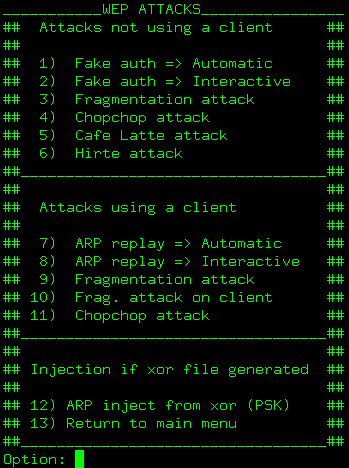

Wep attacks are splitted in two main sections: Attacks using a client, and attacks not needing a client.
For attacks using a client, obviously, you need to have a client... (It sounds obviuos, but surely there are people that forget it ;-) )
For psk there is an attack, but only if xor file is already generated. You'll have to use chopchop or frag for this, see aircrack-ng documentation for more info.
